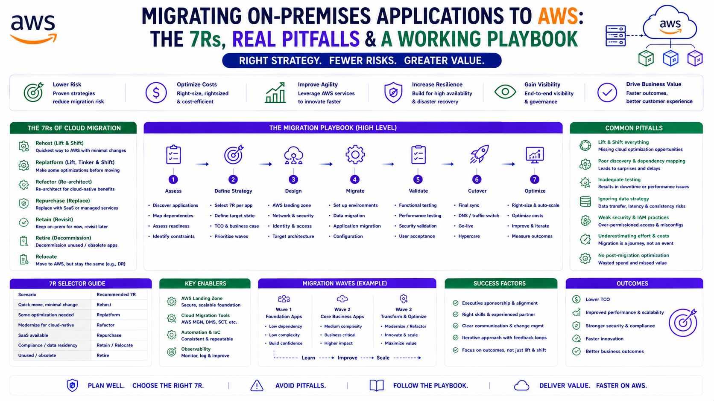

Migrating On-Premises Applications to AWS: The 7Rs, Real Pitfalls & a Working Playbook
AWS Series | Part 21 — Building secure, cost-optimised, cloud-native infrastructure on AWS.

TL;DR
| Dimension | The Reality |
|---|---|
| Trigger | Office relocation — leaving a building with two on-prem datacentres for leased city-centre space with no DC option |
| Scope | 30–40 servers — Active Directory, Jenkins, developer machines, Sophos firewall, Linux + Windows |
| Primary tool | AWS Application Migration Service (MGN) — agent-based lift-and-shift |
| Strategy | Multi-account — developer workloads and tooling separated |
| Rebuilt, not migrated | Jenkins (old and unmaintained), developer desktops (→ Workspaces), firewall (→ Client VPN) |
| The hidden dependency | DNS servers lived in the DCs too — full migration to Route 53 |
| Timeline | 3–4 months, largely single-handed |
| Biggest lesson | Document during knowledge transfer, not after — and nothing is as impossible as it first looks |
Introduction — The Migration Nobody Plans For
Most cloud migrations start with a strategy deck. This one started with a moving van.
The company was leaving a building it had outgrown — a building that happened to house two small on-premises datacentres, one in each wing, four racks each, packed with the servers that ran the business. The destination was leased office space in the city centre, where running a datacentre was not an option. That left one question: what happens to the workloads?
The answer was AWS, because AWS was already in use for greenfield projects. But "we already use AWS" is not a migration plan. Thirty to forty servers — Active Directory, a Jenkins cluster, developer machines, a Sophos firewall, a mix of Linux and Windows — had to move, be rebuilt, or be replaced, and the datacentres had a decommission date that did not move.
This is the playbook from that migration: what was lifted, what was rebuilt, what broke, and what I would do differently. It is also an honest account of doing a year's worth of migration in three to four months, largely alone, learning most of it on the way.
1. The 7Rs — The Framework Behind Every Migration Decision
Before any server moves, every workload needs a migration strategy. AWS frames this as the 7Rs. You do not need to memorise them — you need to apply the right one to each workload:
| Strategy | What It Means | Used Here For |
|---|---|---|
| Rehost | Lift-and-shift, no changes ("move the VM as-is") | Most servers — via MGN |
| Replatform | Lift-and-tinker — minor optimisation during move | — |
| Repurchase | Replace with a SaaS/managed equivalent | Developer machines → Workspaces |
| Refactor | Re-architect for cloud-native | Jenkins (rebuilt fresh) |
| Relocate | Move at the hypervisor level (e.g. VMware) | — |
| Retain | Keep on-premises (for now) | — |
| Retire | Decommission — no longer needed | Legacy tooling that didn't justify migration |
The mistake teams make is treating a migration as a single strategy. In reality, every workload gets its own R. The old Jenkins server was a Refactor, not a Rehost, because lifting unmaintained technical debt into the cloud just gives you cloud-hosted technical debt. The developer machines were a Repurchase. The bulk of the servers were a straightforward Rehost. Choosing the right R per workload is the actual skill.
2. The Account Strategy — Multi-Account From the Start
The migration landed into a new, purpose-built account structure rather than a single migration account. The multi-account model (Part 19) applied here even at this scale:
Development Account → developer workloads, dev tooling
Tools Account → Jenkins, shared build infrastructureSeparating like-with-like by account meant the blast radius of any change was contained, the billing was attributable, and access could be scoped per team. It would have been faster to dump everything into one account. It would also have created a single flat environment that we would have had to untangle later — and "later" in a regulated or growing company always arrives.
Why this matters in production: A migration is the cheapest possible time to get your account structure right, because you are touching every workload anyway. Migrating into a clean multi-account layout costs a little more up front and saves a painful re-segmentation project later. Do the account design before the first server moves.
3. The Lift-and-Shift — AWS MGN in Practice
The bulk of the 30–40 servers were rehosted using AWS Application Migration Service (MGN) — the agent-based replication service that became the standard lift-and-shift tool after the older Server Migration Service.
The MGN Workflow
1. Install the MGN agent on the source machine (on-prem)
2. Agent begins continuous block-level replication to AWS
3. Leave it to replicate — overnight for large machines,
hours for smaller ones, until fully synced
4. Launch a TEST/cutover instance from the replicated volume
5. Validate the instance — does it boot, does the app work,
is networking correct?
6. If good → perform cutover, then decommission the source
7. Repeat per machine / per batchThe discipline that made this work was validate-then-decommission, never the reverse. Each machine was replicated, launched as a cutover instance, checked end-to-end, and only then was the on-premises source retired. A server-by-server cadence meant a problem with one machine never threatened the others.
Both Linux and Windows workloads migrated through the same MGN process. The agent handles the OS differences; the workflow stays the same.
Why this matters in production: MGN's continuous replication means the actual cutover window is short — the data is already in AWS, you are only switching over. The long part (replication) happens with the source still running and serving. The risky part (cutover) is brief and reversible until you decommission. Respect that sequence and a lift-and-shift becomes low-drama.
4. Jenkins — Why I Rebuilt Instead of Migrating
Not everything deserves to be lifted. The Jenkins cluster running in the datacentre was old, full of warnings, and evidently un-maintained for a long time — the kind of server everyone depends on and nobody touches. Migrating it via MGN would have faithfully reproduced years of accumulated technical debt in the cloud.
So Jenkins was a Refactor — rebuilt fresh:
- A clean, current Jenkins with up-to-date plugins instead of the legacy mess
- Job definitions carried over via S3 — the existing project/job configuration was exported, staged in S3, and imported into the new cluster, so pipelines came back without re-authoring everything by hand
- Worker nodes sized to the work — performance-testing jobs needed bigger machines, so those Linux workers (3–4 nodes) were larger; the Windows workers (2 nodes) were sized for their lighter load
The result was a Jenkins that did everything the old one did, minus the warnings and the fragility.
What I'd Do Differently Today
If I rebuilt this Jenkins now, I would not run fixed EC2 worker nodes at all. I would run the controller on EKS or ECS with Spot-backed dynamic workers — agents that spin up per build and disappear when idle. The fixed Linux and Windows worker fleet I built was the right call with the time and tools I had then; today it is paying for idle capacity that dynamic, containerised, Spot-backed agents would eliminate. (The autoscaling and Spot patterns in Part 13 and Part 17 are exactly this.)
5. Developer Machines — Repurchase to AWS Workspaces
The on-premises developer machines were replaced — a Repurchase — with AWS Workspaces, cloud desktops integrated with Azure AD so developers logged in with their existing corporate identity.
The technical part was straightforward. The human part is what made it succeed:
Ten to twelve developers were affected — the people whose daily working environment was about to change. Rather than announce it and hope, I ran a demo first, showed the team what the Workspaces experience would look like, and assigned one developer to work alongside me to test the setup before it reached everyone else. That developer became the internal advocate. When the rollout came, it came with a colleague's endorsement rather than an IT mandate.
Why this matters in production: A migration that changes how people work is a change-management problem wearing a technical costume. The demo-first, one-trusted-tester approach cost a few days and bought the trust of the entire team. Technical migrations fail on adoption far more often than on technology.
6. The Hidden Dependency — DNS Lived in the Datacentre Too
Here is the surprise that the original plan did not fully account for: the DNS servers were in the datacentres. The same datacentres being decommissioned. Migrating the application servers and forgetting the DNS that pointed to them would have produced a cloud full of working servers that nothing could find.
So DNS became its own migration: the full move to Amazon Route 53, coordinated with the domain registrar to transfer the domains and recreate every record safely. Despite being the kind of task where one wrong record breaks everything, it went smoothly — careful record-by-record migration, validation against the registrar, and a clean cutover.
Why this matters in production: The workloads you remember to migrate are the easy ones. The infrastructure those workloads silently depend on — DNS, certificate authorities, directory services, time servers — lives in the same datacentre and is easy to forget until a cutover fails for a reason nobody can immediately explain. Inventory the dependencies, not just the applications.
7. Sophos Firewall — Replacing a Multi-Function Appliance
The Sophos appliance was doing more than its job title suggested. On paper, a firewall. In practice: perimeter firewall, DNS safeguarding, URL-path filtering, and IP-forwarding rules that routed requests to the right internal machines. A single box quietly holding several responsibilities.
Replacing it meant unpicking those responsibilities and re-homing them in AWS — with AWS Client VPN providing the secure remote-access path, integrated with Active Directory so users authenticated with their existing identity.
This was the hardest technical piece of the entire migration. It was completely new territory, it involved a lot of networking that did not click into place immediately, and getting it right took working through the detail carefully — with AWS Support's help, which was genuinely valuable on the Client VPN networking specifics.
I got the Sophos configuration through knowledge transfer at the time, got reasonably good at it, made the migration work — and did not document it properly. Three years on, most of that detail has faded. That is the real lesson, and it is worth more than any networking tip: document during the knowledge transfer, while it is fresh, not after the project ships. Undocumented expertise is a liability with a delay timer on it — it works fine until the person who holds it moves on or simply forgets.
8. What Went Better Than Expected
Two parts of the migration were smoother than the planning feared:
The MGN server migrations. The agent-based, replicate-validate-cutover workflow was reliable and low-drama. Once the rhythm was established — install, replicate, test, cut over, decommission — the bulk of the 30–40 servers moved through it predictably.
The DNS migration to Route 53. Despite being the highest-stakes single task (one bad record breaks resolution for everything), the careful migration and registrar coordination went cleanly. Route 53's reliability and the methodical record-by-record approach turned a scary task into an uneventful one.
9. Lessons Learned — The Honest Reflection
Doing it single-handed taught more than any course could. Active Directory, MGN, Workspaces, Route 53, Client VPN, the Sophos teardown — most of it was new. Doing it alone, under a fixed decommission deadline, compressed a year's worth of learning into three to four months. The lasting outcome was not the architecture — it was the confidence that a problem being unfamiliar does not make it impossible.
AWS Support earned its place. On the Client VPN networking — the most unfamiliar and most complex part — AWS Support was genuinely helpful. Knowing when to use the support channel rather than burning days alone is itself an operational skill.
Document while the knowledge is fresh. The Sophos gap is the one I would most want back. Knowledge transferred under deadline pressure feels permanent in the moment and evaporates within months. The hour spent writing it down during the project is the cheapest insurance you will ever buy.
Right-size the strategy per workload. The migration worked because Jenkins was refactored, desktops were repurchased, the firewall was replaced, and the rest were rehosted — each workload got the R that fit it, not a blanket lift-and-shift.
10. What I'd Do Differently
Jenkins on EKS/ECS with Spot workers instead of fixed EC2 nodes — dynamic, containerised agents that scale to zero when idle, eliminating the cost of a standing worker fleet.
Document the firewall and networking configuration in real time — capturing the Sophos responsibilities and the Client VPN networking decisions as they were made, not relying on memory that fades.
Build a dependency map before touching the first server — DNS being in the datacentre was a manageable surprise here, but on a larger migration an un-inventoried dependency is how cutovers fail. Map directory services, DNS, certificates, and time sources explicitly before starting.
The Migration Playbook — Distilled
1. Inventory everything — applications AND their hidden
dependencies (DNS, AD, certs, firewalls)
2. Assign each workload an R — rehost, refactor, repurchase, retire
3. Design the target account structure BEFORE migrating
4. Rehost the bulk via MGN — replicate, validate, cut over, decommission
5. Refactor the technical debt — don't lift unmaintained systems
6. Repurchase commodity workloads — desktops → Workspaces
7. Treat people-facing changes as change management — demo first
8. Migrate the dependencies too — DNS to Route 53, identity to AD-integrated services
9. Use AWS Support for genuinely unfamiliar territory
10. Document as you go — not afterThe Golden Rule
"A datacentre migration is not one migration — it is thirty small ones, each needing its own strategy. Rehost what is healthy, refactor what is rotten, repurchase what is commodity, and retire what nobody will miss. The servers you remember are the easy part; the DNS, directory services, and firewall rules they silently depend on are what break cutovers. Validate before you decommission, design your accounts before you migrate, and document while the knowledge is fresh — because the expertise you gain under deadline pressure fades faster than you expect, and the only version that survives is the version you wrote down."